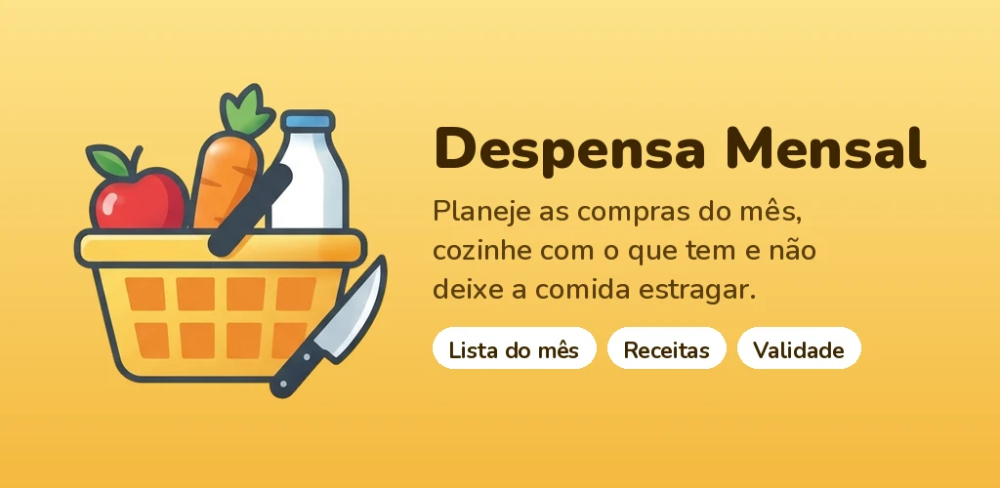

Teste o Despensa Mensal antes de todo mundo
Antes de liberar um app novo na loja, o Google pede que pelo menos 12 pessoas o testem por 14 dias. Você pode ser uma delas.
O teste abre em poucos dias. O app está em revisão no Google. Já dá para entrar no grupo (passo 1); os botões dos passos 2 e 3 ficam ativos assim que o teste for liberado.
O que é o app
O Despensa Mensal organiza a comida da casa por um mês inteiro: monta a lista de compras do mês, mostra o que dá para cozinhar com o que você já tem e avisa antes de um alimento vencer.
- Lista de compras com o total do mês e modo mercado.
- Centenas de receitas simples com alimentos do dia a dia.
- Estoque com cores de validade e previsão de até quando a comida dura.
- Sem cadastro, funciona sem internet e os dados ficam só no seu celular.
Como participar
Você só precisa de um celular Android e de uma conta Google. Use a mesma conta em todos os passos.
-
Entre no grupo de testadores
Abra o grupo e toque em Participar do grupo. É por ele que o Google libera o acesso ao app. Você não vai receber spam: o grupo só serve para isso.
Entrar no grupo -
Aceite o convite do teste
Abra o link do teste e toque em Tornar-se testador.
Em breve -
Instale pela Play Store
Depois de aceitar, o Despensa Mensal aparece na Play Store para a sua conta. Pode levar alguns minutos.
Em breve -
Fique com o app por 14 dias
Não desinstale antes de 14 dias: é isso que conta para o Google. Usar de vez em quando (montar uma lista, marcar uma compra, ver uma receita) ajuda muito, e qualquer comentário é bem-vindo.
Dúvidas comuns
- Não encontro o app na Play Store. Confira se a Play Store está na mesma conta Google que entrou no grupo (toque na sua foto, no canto da tela, para trocar).
- Tem iPhone? Por enquanto o Despensa Mensal é só para Android.
- É grátis? Sim. O app exibe anúncios.
- Como mando sugestões ou erros? Pela própria Play Store ou por e-mail.